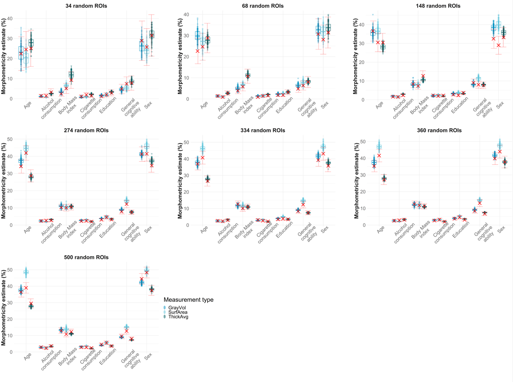
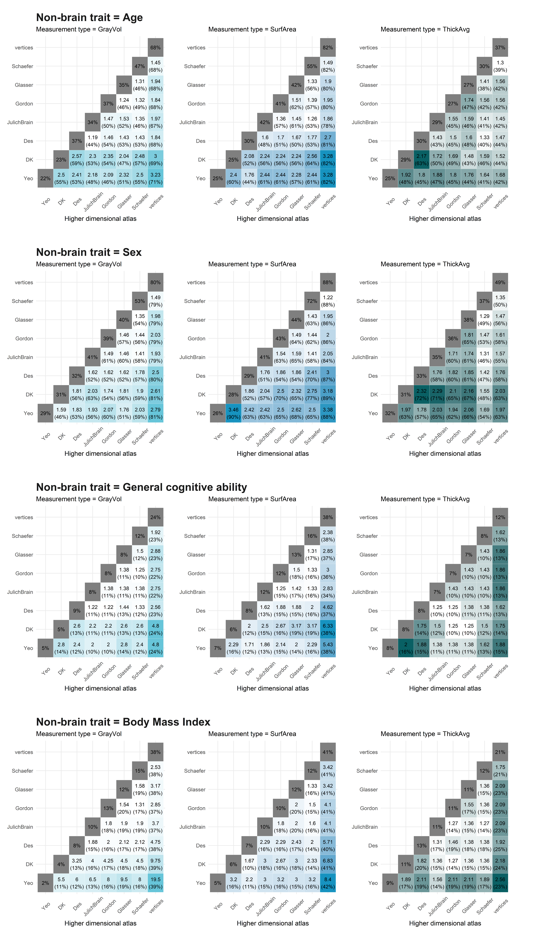

Results
Anna Elisabeth Furtjes
1. Descriptive statistics
### plot descriptive stats for phenotypic variables
library(readr)
library(tidyr)
library(ggplot2)
library(Hmisc)
library(plyr)
library(RColorBrewer)
library(reshape2)
library(PupillometryR)
library(cowplot)
setwd("~/phenotypes")
pheno<-read.table("age_pheno.txt",header=F)
names(pheno) <- c("IID","FID","age_in_months")
pheno$name <- rep("Age in months",nrow(pheno))
# restrict to overlapping participants with brain data
ids <- read.table("indi.list.fid")
names(ids)[1]="IID"
pheno = merge(pheno, ids, by="IID")
age_plot <- ggplot(data=pheno, aes(x=name, y=age_in_months))+
geom_flat_violin(position = position_nudge(x = .2, y = 0), alpha = .8, colour="#1A1A1A", fill = "#98bdcd",alpha=0.1, lwd=1) +
geom_point(aes(y = age_in_months), position = position_jitter(width = .15), size = .5, alpha = 1,colour="#98bdcd")+
geom_boxplot(width = .2, guides = FALSE, outlier.shape = NA, alpha = 0.5, colour="#1A1A1A", lwd=1.3)+
expand_limits(x=2)+
ylab("Age in months")+
annotate(geom = "text", x=1, y=500,label=paste0("N = ",nrow(pheno)),color="#696969")+
theme_bw()+
theme(text = element_text(size=12),#, colour='lemonchiffon4'
axis.text.x = element_blank(),
axis.text.y = element_text(size=13, colour='#696969'),
axis.title.y = element_text(face="bold", colour='#1A1A1A', size=17),
axis.title.x = element_blank(),
axis.line.x = element_blank(),
axis.line.y = element_blank(),
axis.ticks.x = element_blank(),
axis.ticks.y = element_blank(),
panel.border = element_blank())
age_plot
############################################################
pheno<-read.table("bmi_pheno.txt",header=F)
names(pheno) <- c("IID","FID","bmi")
pheno$name <- rep("BMI",nrow(pheno))
# restrict to overlapping participants with brain data
pheno = merge(pheno, ids, by="IID")
bmi_plot <- ggplot(data=pheno, aes(x=name, y=bmi))+
geom_flat_violin(position = position_nudge(x = .2, y = 0), alpha = .8, colour="#1A1A1A", fill = "#98bdcd",alpha=0.1, lwd=1) +
geom_point(aes(y = bmi), position = position_jitter(width = .15), size = .5, alpha = 1,colour="#98bdcd")+
geom_boxplot(width = .2, guides = FALSE, outlier.shape = NA, alpha = 0.5, colour="#1A1A1A", lwd=1.3)+
expand_limits(x=2)+
ylab("Body Mass Index")+
annotate(geom = "text", x=1, y=10,label=paste0("N = ",nrow(pheno)),color="#696969")+
theme_bw() +
theme(text = element_text(size=12),#, colour='lemonchiffon4'
axis.text.x = element_blank(),
axis.text.y = element_text(size=13, colour='#696969'),
axis.title.y = element_text(face="bold", colour='#1A1A1A', size=17),
axis.title.x = element_blank(),
axis.line.x = element_blank(),
axis.line.y = element_blank(),
axis.ticks.x = element_blank(),
axis.ticks.y = element_blank(),
panel.border = element_blank())
bmi_plot
############################################################
pheno<-read.table("gpheno.txt",header=F)
names(pheno) <- c("IID","FID","g")
pheno$name <- rep("g",nrow(pheno))
# restrict to overlapping participants with brain data
pheno = merge(pheno, ids, by="IID")
g_plot <- ggplot(data=pheno, aes(x=name, y=g))+
geom_flat_violin(position = position_nudge(x = .2, y = 0), alpha = .8, colour="#1A1A1A", fill = "#98bdcd",alpha=0.1, lwd=1) +
geom_point(aes(y = g), position = position_jitter(width = .15), size = .5, alpha = 1,colour="#98bdcd")+
geom_boxplot(width = .2, guides = FALSE, outlier.shape = NA, alpha = 0.5, colour="#1A1A1A", lwd=1.3)+
expand_limits(x=2)+
ylab("General Cognitive Ability")+
annotate(geom = "text", x=1, y=-2.5,label=paste0("N = ",nrow(pheno)),color="#696969")+
theme_bw() +
theme(text = element_text(size=12),#, colour='lemonchiffon4'
axis.text.x = element_blank(),
axis.text.y = element_text(size=13, colour='#696969'),
axis.title.y = element_text(face="bold", colour='#1A1A1A', size=17),
axis.title.x = element_blank(),
axis.line.x = element_blank(),
axis.line.y = element_blank(),
axis.ticks.x = element_blank(),
axis.ticks.y = element_blank(),
panel.border = element_blank())
g_plot
##########################
#pheno <- data.frame(matrix(nrow=2000,ncol=3))
#names(pheno) <- c("IID","FID","sex")
#pheno$IID <- 1:nrow(pheno)
#pheno$FID <- 1:nrow(pheno)
#pheno$sex[1:1300] <- 0
#pheno$sex[1301:nrow(pheno)] <- 1
pheno<-read.table("sex_pheno.txt",header=F)
names(pheno) <- c("IID","FID","sex")
# restrict to overlapping participants with brain data
pheno = merge(pheno, ids, by="IID")
## Female = 0
sex_plot<-
ggplot(pheno,aes(x=sex))+
geom_histogram(binwidth = 1, fill="#98bdcd", color="#1A1A1A",lwd=1.3)+
annotate(geom = "text", x=0, y=sum(pheno$sex == 0)-2000,label=paste0(sum(pheno$sex == 0),"\nfemales"),color="#696969")+
annotate(geom = "text", x=1, y=sum(pheno$sex == 1)-2000,label=paste0(sum(pheno$sex == 1),"\nmales"),color="#696969")+
ylab("Males and females (count)")+
theme_bw() +
theme(text = element_text(size=12),#, colour='lemonchiffon4'
axis.text.x = element_blank(),
axis.text.y = element_text(size=13, colour='#696969'),
axis.title.y = element_text(face="bold", colour='#1A1A1A', size=17),
axis.title.x = element_blank(),
axis.line.x = element_blank(),
axis.line.y = element_blank(),
axis.ticks.x = element_blank(),
axis.ticks.y = element_blank(),
panel.border = element_blank())
sex_plot
##########################
pheno<-read.table("cig_pheno.txt",header=F)
names(pheno) <- c("IID","FID","cig")
# restrict to overlapping participants with brain data
pheno = merge(pheno, ids, by="IID")
cig_plot<-
ggplot(pheno,aes(x=cig))+
geom_histogram(binwidth = 1, fill="#98bdcd", color="#1A1A1A",lwd=1.3)+
ylab("Cigarette smoking (count)")+
annotate(geom = "text", x=3.5, y=21000,label=paste0("N = ", nrow(pheno)),color="#696969")+
annotate(geom = "text", x=0, y=sum(pheno$cig == 0)+2500,label="Never smoked",color="#696969",angle = 90)+
annotate(geom = "text", x=1, y=sum(pheno$cig == 1)+4000,label="Just tried once or twice",color="#696969",angle = 90)+
annotate(geom = "text", x=2, y=sum(pheno$cig == 2)-2500,label="Occasionally",color="#696969",angle = 90)+
annotate(geom = "text", x=3, y=sum(pheno$cig == 3)+7000,label="Regularly - bottom quantile quantity",color="#696969",angle = 90)+
annotate(geom = "text", x=4, y=sum(pheno$cig == 4)+7000,label="Regularly - second quantile quantity",color="#696969",angle = 90)+
annotate(geom = "text", x=5, y=sum(pheno$cig == 5)+7000,label="Regularly - third quantile quantity",color="#696969",angle = 90)+
annotate(geom = "text", x=6, y=sum(pheno$cig == 6)+7000,label="Regularly - top quantile quantity",color="#696969",angle = 90)+
theme_bw() +
theme(text = element_text(size=12),#, colour='lemonchiffon4'
axis.text.x = element_blank(),
axis.text.y = element_text(size=13, colour='#696969'),
axis.title.y = element_text(face="bold", colour='#1A1A1A', size=17),
axis.title.x = element_blank(),
axis.line.x = element_blank(),
axis.line.y = element_blank(),
axis.ticks.x = element_blank(),
axis.ticks.y = element_blank(),
panel.border = element_blank())
cig_plot
##########################
pheno<-read.table("edu_pheno.txt",header=F)
names(pheno) <- c("IID","FID","edu")
# restrict to overlapping participants with brain data
pheno = merge(pheno, ids, by="IID")
edu_plot<-
ggplot(pheno,aes(x=edu))+
geom_histogram(binwidth = 1, fill="#98bdcd", color="#1A1A1A",lwd=1.3)+
ylab("Education (count)")+
theme_bw() +
annotate(geom = "text", x=0, y=sum(pheno$edu == 0)+4000,label="None of the above",color="#696969",angle = 90)+
annotate(geom = "text", x=1, y=sum(pheno$edu == 1)+6000,label="Other professional qualifications",color="#696969",angle = 90)+
annotate(geom = "text", x=2, y=sum(pheno$edu == 2)+6000,label="NVQ or HND or HNC or equivalent",color="#696969",angle = 90)+
annotate(geom = "text", x=3, y=sum(pheno$edu == 3)+4000,label="CSEs or equivalent",color="#696969",angle = 90)+
annotate(geom = "text", x=4, y=sum(pheno$edu == 4)+5500,label="O levels/GCSEs or equivalent",color="#696969",angle = 90)+
annotate(geom = "text", x=5, y=sum(pheno$edu == 5)+5500,label="A levels/AS levels or equivalent",color="#696969",angle = 90)+
annotate(geom = "text", x=6, y=sum(pheno$edu == 6)-5000,label="College or University degree",color="#696969",angle = 90)+
annotate(geom = "text", x=3.5, y=21000,label=paste0("N = ", nrow(pheno)),color="#696969")+
theme(text = element_text(size=12),#, colour='lemonchiffon4'
axis.text.x = element_blank(),
axis.text.y = element_text(size=13, colour='#696969'),
axis.title.y = element_text(face="bold", colour='#1A1A1A', size=17),
axis.title.x = element_blank(),
axis.line.x = element_blank(),
axis.line.y = element_blank(),
axis.ticks.x = element_blank(),
axis.ticks.y = element_blank(),
panel.border = element_blank())
edu_plot
##########################
pheno<-read.table("alc_pheno.txt",header=F)
names(pheno) <- c("IID","FID","alc")
# restrict to overlapping participants with brain data
pheno = merge(pheno, ids, by="IID")
alc_plot<-
ggplot(pheno,aes(x=alc))+
geom_histogram(binwidth = 1, fill="#98bdcd", color="#1A1A1A",lwd=1.3)+
ylab("Alcohol (count)")+
annotate(geom = "text", x=1.5, y=10000,label=paste0("N = ", nrow(pheno)),color="#696969")+
annotate(geom = "text", x=0, y=sum(pheno$alc == 0)+2000,label="Never drinking",color="#696969",angle = 90)+
annotate(geom = "text", x=1, y=sum(pheno$alc == 1)+2000,label="Monthly or less",color="#696969",angle = 90)+
annotate(geom = "text", x=2, y=sum(pheno$alc == 2)+2000,label="2 to 4 times a month",color="#696969",angle = 90)+
annotate(geom = "text", x=3, y=sum(pheno$alc == 3)-2000,label="2 to 3 times a week",color="#696969",angle = 90)+
annotate(geom = "text", x=4, y=sum(pheno$alc == 4)-2000,label="4 or more times a week",color="#696969",angle = 90)+
theme_bw() +
theme(text = element_text(size=12),#, colour='lemonchiffon4'
axis.text.x = element_blank(),
axis.text.y = element_text(size=13, colour='#696969'),
axis.title.y = element_text(face="bold", colour='#1A1A1A', size=17),
axis.title.x = element_blank(),
axis.line.x = element_blank(),
axis.line.y = element_blank(),
axis.ticks.x = element_blank(),
axis.ticks.y = element_blank(),
panel.border = element_blank())
alc_plot
##########################
library(cowplot)
library(gridExtra)
tiff("~/Comparing labelling protocols/results/pheno/cont_plots.tiff", width = 15, height = 5, units = 'in', res=1000)
plot_grid(age_plot, bmi_plot, g_plot, nrow = 1, ncol = 3, labels=c("A","B","C"), label_colour = "#696969")
dev.off()
tiff("~/Comparing labelling protocols/results/pheno/cat_plots.tiff", width = 15, height = 5, units = 'in', res=1000)
plot_grid(sex_plot, cig_plot, edu_plot, alc_plot, nrow = 1, ncol = 4, labels=c("D","E","F","G"), label_colour = "#696969")
dev.off()
Continuous phenotypes

Categorical phenotypes

2. Morphometricity estimates
#### plot morph results for empirical atlases
## using geom_point & geom_errorbar
##
setwd("~/Comparing labelling protocols/results/empirical")
library(ggplot2)
#est = read.table("morph_results_QCed.table", header=T)
est = read.table("morph_results_QCed_vertices.table", header=T)
randomest = read.table("morph_results_randomaparc.table", header=T)
est = rbind(est, randomest)
# change measurement type names from randomaparc
est$meas[which(est$meas == "area")] = "SurfArea"
est$meas[which(est$meas == "volume")] = "GrayVol"
est$meas[which(est$meas == "thickness")] = "ThickAvg"
names(est)[which(names(est) == "meas")] = "Measurement type"
# add to data.frame how any areas each atlas has
est$num_roi = 0
est$num_roi[which(est$atlas == "DK")] = 68
est$num_roi[which(est$atlas == "Des")] = 148
est$num_roi[which(est$atlas == "Glasser")] = 360
est$num_roi[which(est$atlas == "Gordon")] = 333
est$num_roi[which(est$atlas == "Schaefer")] = 500
est$num_roi[which(est$atlas == "Yeo")] = 34
est$num_roi[which(est$atlas == "JulichBrain")] = 273
est$num_roi[which(est$atlas == "10000randomROIs")] = 10000
est$num_roi[which(est$atlas == "1000randomROIs")] = 1000
est$num_roi[which(est$atlas == "50000randomROIs")] = 50000
est$num_roi[which(est$atlas == "5000randomROIs")] = 5000
est$num_roi[which(est$atlas == "vertices")] = 300000
# get numeric array to idnicate where to plot x axis
est$num_plot = 0
est$num_plot[which(est$atlas == "DK")] = 2
est$num_plot[which(est$atlas == "Des")] = 3
est$num_plot[which(est$atlas == "Glasser")] = 6
est$num_plot[which(est$atlas == "Gordon")] = 5
est$num_plot[which(est$atlas == "Schaefer")] = 7
est$num_plot[which(est$atlas == "Yeo")] = 1
est$num_plot[which(est$atlas == "JulichBrain")] = 4
est$num_plot[which(est$atlas == "1000randomROIs")] = 8
est$num_plot[which(est$atlas == "5000randomROIs")] = 9
est$num_plot[which(est$atlas == "10000randomROIs")] = 10
est$num_plot[which(est$atlas == "50000randomROIs")] = 11
est$num_plot[which(est$atlas == "vertices")] = 12
pheno_loop = c("age", "sex", "gpheno", "bmi", "alc", "edu", "cig")
save=list()
counter=0
for(i in pheno_loop){
# define input pheno & Measurement type
pheno = i
counter = counter+1
if(pheno == "sex" | pheno == "age"){
title=paste0(toupper(substr(pheno, 1,1)),substr(pheno, 2,nchar(pheno)))
}else if(pheno == "bmi"){
title=paste0("Body Mass Index")
}else if(pheno == "alc"){
title=paste0("Alcohol consumption")
}else if(pheno == "cig"){
title=paste0("Cigarette consumption")
}else if(pheno == "edu"){
title=paste0("Education")
}else if(pheno == "gpheno"){
title=paste0("General cognitive ability")
}
title_size=22
other_size=20
axis_text=16
datasubset = est[which(est$pheno == i) ,]
morphplot <- ggplot(data=datasubset, mapping= aes(y = morph, x = num_plot, group = `Measurement type`, colour = `Measurement type`))+
geom_point(mapping = aes(y = morph, x = num_plot), size=2.5, alpha = 1, position=position_dodge(width=0.3))+
geom_errorbar(aes(ymin = ci_l,
ymax = ci_u, x = num_plot), size=.6, alpha = 1, position=position_dodge(width=0.3))+
scale_color_manual(values = c("#0492C2", "#63C5DA","#016064"))+
#xlab("Number of ROIs")+
ylab("Morphometricity (%)")+
ggtitle(title)+
scale_x_discrete(limits=c("34","68","148","273","333","360","500","1k","5k","10k","50k","300k"))+ ##unique(est$num_roi)
scale_y_discrete(limits = c(0,10,20,30,40,50,60,70))+
ylim(0,max(datasubset$ci_u))+
theme_bw()+
#scale_x_discrete(labels= c("34","68","148","273","333","360","500","1000","5000","10.000","50.000"))+
theme(text = element_text(size=other_size),
axis.text.x = element_text(size=axis_text, colour='#696969'),
axis.text.y = element_text(size=axis_text, colour='#696969'),
plot.title = element_text(face="bold", colour='#1A1A1A', size=title_size, hjust = 0.5),
axis.title.y = element_text(face="bold", colour='#1A1A1A', size=20, angle=90),
axis.title.x = element_blank(),
axis.line.x = element_blank(),
axis.line.y = element_blank(),
axis.ticks.x = element_blank(),
axis.ticks.y = element_blank(),
panel.border = element_blank())
#scale_color_manual(name='Parcellations',
# breaks=c('Functional', 'Structural', 'Multi-modal'),
# values=c('Functional'='#E69F00', 'Structural'='#56B4E9', 'Multi-modal'='#009E73'))
#if(counter == 1 | counter == 4){
# morphplot+ylab("Morphometricity (%)")+ theme(axis.title.y = element_text(face="bold", colour='#1A1A1A', size=20, angle=90))
# }
if(counter < length(pheno_loop)){
morphplot = morphplot + theme(legend.position = "none")+xlab("Number of ROIs")+ theme(axis.title.x = element_text(face="bold", colour='#1A1A1A', size=20))
}
save[[i]] <- morphplot
}
# formatting
#save[["age"]] <- save[["age"]]+ylab("Morphometricity (%)")+ theme(axis.title.y = element_text(face="bold", colour='#1A1A1A', size=20, angle=90))
#save[["cig"]] <- save[["cig"]]+xlab("Number of ROIs")+theme(axis.title.x = element_text(face="bold", colour='#1A1A1A', size=20))
for(i in pheno_loop){
tiff(paste0("~/Comparing labelling protocols/results/plots/morph_", i, ".tiff"), width = 8, height = 4, units = "in", pointsize = 2, bg="white", res=800)
save[[i]]
dev.off()
}
### cig/ last pheno has to have more width
tiff(paste0("~/Comparing labelling protocols/results/plots/morph_", "cig", ".tiff"), width = 10.5, height = 4, units = "in", pointsize = 2, bg="white", res=800)
save[["cig"]]
dev.off()
#save(save, "~/Comparing labelling protocols/results/morph.RData")

setwd("C:/Users/k1894405/OneDrive - King's College London/PhD/Projects/Comparing labelling protocols/results/empirical")
est = read.table("morph_results_QCed_vertices.table", header=T)
randomest = read.table("morph_results_randomaparc.table", header=T)
est = rbind(est, randomest)
# change measurement type names from randomaparc
est$meas[which(est$meas == "area")] = "SurfArea"
est$meas[which(est$meas == "volume")] = "GrayVol"
est$meas[which(est$meas == "thickness")] = "ThickAvg"
names(est)[which(names(est) == "meas")] = "Measurement type"
est=est[order(est$pheno, est$`Measurement type`),]
library(DT)
datatable(est, rownames=FALSE, filter="top",options= list(pageLength=10,scrollX=T), caption = "Morphometricity estimates")
Increase in morphometricity from the smallest (34 ROIs Yeo atlas) to the largest brain representation (300.000 vertices)
setwd("C:/Users/k1894405/OneDrive - King's College London/PhD/Projects/Comparing labelling protocols/results/empirical")
# read in results
est = read.table("morph_results_QCed_vertices.table", header=T)
# only keep smallest and largest dimensionality
est = est[which(est$atlas == "vertices" | est$atlas == "Yeo"),]
# change measurement type names from randomaparc
est$meas[which(est$meas == "area")] = "SurfArea"
est$meas[which(est$meas == "volume")] = "GrayVol"
est$meas[which(est$meas == "thickness")] = "ThickAvg"
# save results in table
names_results = c("meas", "pheno", "est_Yeo","est_vertices","improvement")
results = data.frame(matrix(nrow=0, ncol = length(names_results)))
names(results) = names_results
for(i in unique(est$meas)){
for(j in unique(est$pheno)){
subset = est[which(est$pheno == j & est$meas == i),]
est1 = subset$morph[1]
est2 = subset$morph[2]
imp = max(c(est1,est2))/min(c(est1,est2))
results[nrow(results)+1,] <- c(i,j,min(c(est1,est2)),max(c(est1,est2)),imp)
}
}
# round numbers
results$improvement = round(as.numeric(results$improvement), digits = 2)
# sort by largest increase in morph (max(improvement))
results = results[order(results$improvement, decreasing=T),]
results[,c(3:ncol(results))] = lapply(results[,c(3:ncol(results))], as.numeric)
library(DT)
datatable(results, rownames=FALSE, filter="top",options= list(pageLength=10,scrollX=T), caption = "Relative improvement in morphometricity from Yeo to vertices")Summarise improvement variable:
Smallest increase = 1.49-fold
Largest increase = 15.17-fold
Mean = 5.6085714-fold
SD = 3.9482151-fold
Median = 3.41-fold
Summary only for cognitive ability for comparison with this study.
setwd("C:/Users/k1894405/OneDrive - King's College London/PhD/Projects/Comparing labelling protocols/results/empirical")
# read in results
est = read.table("morph_results_QCed_vertices.table", header=T)
# only keep largest dimensionality and Glasser
est = est[which(est$atlas == "vertices" | est$atlas == "Glasser"),]
# change measurement type names from randomaparc
est$meas[which(est$meas == "area")] = "SurfArea"
est$meas[which(est$meas == "volume")] = "GrayVol"
est$meas[which(est$meas == "thickness")] = "ThickAvg"
# keep only gpheno
gpheno=est[which(est$pheno == "gpheno"),]
# save results in table
names_results = c("meas", "pheno", "est_Glasser","est_vertices","improvement")
results_g = data.frame(matrix(nrow=0, ncol = length(names_results)))
names(results_g) = names_results
for(i in unique(gpheno$meas)){
for(j in unique(gpheno$pheno)){
subset = gpheno[which(gpheno$pheno == j & gpheno$meas == i),]
gpheno1 = subset$morph[1]
gpheno2 = subset$morph[2]
imp = max(c(gpheno1,gpheno2))/min(c(gpheno1,gpheno2))
results_g[nrow(results_g)+1,] <- c(i,j,min(c(gpheno1,gpheno2)),max(c(gpheno1,gpheno2)),imp)
}
}
# round numbers
results_g$improvement = round(as.numeric(results_g$improvement), digits = 2)
# sort by larggpheno increase in morph (max(improvement))
results_g = results_g[order(results_g$improvement, decreasing=T),]
knitr::kable(results_g[which(results_g$pheno == "gpheno"),])| meas | pheno | est_Glasser | est_vertices | improvement |
|---|---|---|---|---|
| SurfArea | gpheno | 13.1181 | 38.0167 | 2.90 |
| GrayVol | gpheno | 8.4806 | 23.8461 | 2.81 |
| ThickAvg | gpheno | 6.7863 | 12.4454 | 1.83 |
Create Excel worksheet
Every time I render this html file, the Excel sheet used as supplementary information in the paper will be updated.
library(xlsx)
# create a new workbook for outputs
#++++++++++++++++++++++++++++++++++++
# possible values for type are : "xls" and "xlsx"
wb<-createWorkbook(type="xlsx")
# Define some cell styles
#++++++++++++++++++++++++++++++++++++
# Title and sub title styles
TITLE_STYLE <- CellStyle(wb)+ Font(wb, heightInPoints=16,
isBold=TRUE, underline=1)#+
#Fill(backgroundColor ="#BED8E2")
SUB_TITLE_STYLE <- CellStyle(wb) +
Font(wb, heightInPoints=14,
isItalic=TRUE, isBold=FALSE)
# Styles for the data table row/column names
TABLE_ROWNAMES_STYLE <- CellStyle(wb) + Font(wb, isBold=TRUE)
TABLE_COLNAMES_STYLE <- CellStyle(wb) + Font(wb, isBold=TRUE) +
Alignment(wrapText=TRUE, horizontal="ALIGN_CENTER") +
Border(color="black", position=c("TOP", "BOTTOM"),
pen=c("BORDER_THIN", "BORDER_THICK"))
# Create a new sheet in the workbook
#++++++++++++++++++++++++++++++++++++
sheet <- createSheet(wb, sheetName = "ST1 Morphometricity")
#++++++++++++++++++++++++
# Helper function to add titles
#++++++++++++++++++++++++
# - sheet : sheet object to contain the title
# - rowIndex : numeric value indicating the row to
#contain the title
# - title : the text to use as title
# - titleStyle : style object to use for title
xlsx.addTitle<-function(sheet, rowIndex, title, titleStyle){
rows <-createRow(sheet,rowIndex=rowIndex)
sheetTitle <-createCell(rows, colIndex=1)
setCellValue(sheetTitle[[1,1]], title)
setCellStyle(sheetTitle[[1,1]], titleStyle)
}
# Add title and sub title into a worksheet
#++++++++++++++++++++++++++++++++++++
# Add title
xlsx.addTitle(sheet, rowIndex=1, title="STable 1: Morphometricity estimates",
titleStyle = TITLE_STYLE)
# Add sub title
xlsx.addTitle(sheet, rowIndex=2,
title="Estimates from empirical atlases, large random atlases and vertices (as displayed in Figure 4)",
titleStyle = SUB_TITLE_STYLE)
####################
## get results data
####################
setwd("C:/Users/k1894405/OneDrive - King's College London/PhD/Projects/Comparing labelling protocols/results/empirical")
est = read.table("morph_results_QCed_vertices.table", header=T)
randomest = read.table("morph_results_randomaparc.table", header=T)
est = rbind(est, randomest)
# change measurement type names from randomaparc
est$meas[which(est$meas == "area")] = "SurfArea"
est$meas[which(est$meas == "volume")] = "GrayVol"
est$meas[which(est$meas == "thickness")] = "ThickAvg"
names(est)[which(names(est) == "meas")] = "Measurement type"
est=est[order(est$pheno, est$`Measurement type`),]
# Add raw table into a worksheet
#++++++++++++++++++++++++++++++++++++
addDataFrame(est, sheet, startRow=3, startColumn=1,
colnamesStyle = TABLE_COLNAMES_STYLE,
rownamesStyle = TABLE_ROWNAMES_STYLE,row.names = F)
# Change column width
setColumnWidth(sheet, colIndex=c(1:ncol(est)), colWidth=17)
# Add relative improvements table into a worksheet
#++++++++++++++++++++++++++++++++++++
### change sheet name
sheet <-createSheet(wb, sheetName = "ST2 Improvement Yeo vs vertex-wise")
##' change title
xlsx.addTitle(sheet, rowIndex=1, title="STable 2: Summary statistics improvement Yeo vs vertex-wise measures",
titleStyle = TITLE_STYLE)
## Add sub title
xlsx.addTitle(sheet, rowIndex=2,
title="Here we describe the relative improvement in morphometricty between Yeo and vertex-wise measures. The last column 'improvement' indicates the vertex-wise morphometricity (300.000 ROIs) divided by the morphometricity yielded by the Yeo atlas (34 ROIs)",
titleStyle = SUB_TITLE_STYLE)
# indicate table to be sabed
addDataFrame(results, sheet, startRow=3, startColumn=1,
colnamesStyle = TABLE_COLNAMES_STYLE,
rownamesStyle = TABLE_ROWNAMES_STYLE,row.names = F)
# Change column width
setColumnWidth(sheet, colIndex=c(2:ncol(results)), colWidth=14)
setColumnWidth(sheet, colIndex = 1, colWidth=18)
Is increase in morphometricity proportional to increase in atlas dimensionality?
Non-linear relationship between number of ROIs and morphometricity:
library(ggplot2)
setwd("C:/Users/k1894405/OneDrive - King's College London/PhD/Projects/Comparing labelling protocols/results/empirical")
# read in results
est = read.table("morph_results_QCed_vertices.table", header=T)
randomest = read.table("morph_results_randomaparc.table", header=T)
est = rbind(est, randomest)
# change measurement type names from randomaparc
est$meas[which(est$meas == "area")] = "SurfArea"
est$meas[which(est$meas == "volume")] = "GrayVol"
est$meas[which(est$meas == "thickness")] = "ThickAvg"
names(est)[which(names(est) == "meas")] = "Measurement type"
# add to data.frame how any areas each atlas has
est$num_roi = 0
est$num_roi[which(est$atlas == "DK")] = 68
est$num_roi[which(est$atlas == "Des")] = 148
est$num_roi[which(est$atlas == "Glasser")] = 360
est$num_roi[which(est$atlas == "Gordon")] = 333
est$num_roi[which(est$atlas == "Schaefer")] = 500
est$num_roi[which(est$atlas == "Yeo")] = 34
est$num_roi[which(est$atlas == "JulichBrain")] = 273
est$num_roi[which(est$atlas == "10000randomROIs")] = 10000
est$num_roi[which(est$atlas == "1000randomROIs")] = 1000
est$num_roi[which(est$atlas == "50000randomROIs")] = 50000
est$num_roi[which(est$atlas == "5000randomROIs")] = 5000
est$num_roi[which(est$atlas == "vertices")] = 300000
pheno_loop = c("age", "sex", "gpheno", "bmi", "alc", "edu", "cig")
save=list()
counter=0
for(i in pheno_loop){
# define input pheno & Measurement type
counter = counter+1
pheno=i
if(pheno == "sex" | pheno == "age"){
title=paste0(toupper(substr(pheno, 1,1)),substr(pheno, 2,nchar(pheno)))
}else if(pheno == "bmi"){
title=paste0("Body Mass Index")
}else if(pheno == "alc"){
title=paste0("Alcohol consumption")
}else if(pheno == "cig"){
title=paste0("Cigarette consumption")
}else if(pheno == "edu"){
title=paste0("Education")
}else if(pheno == "gpheno"){
title=paste0("General cognitive ability")
}
title_size=22
other_size=20
axis_text=16
datasubset = est[which(est$pheno == i) ,]
datasubset$log = log(datasubset$num_roi)
# plot atlas dimensionality vs. morph (+ confidence intervals)
testplot <- ggplot(data=datasubset, mapping= aes(y = morph, x = log, group = `Measurement type`, colour = `Measurement type`))+
geom_point(mapping = aes(y = morph, x = log), size=2.5, alpha = 1, position=position_dodge(width=0.5))+
geom_errorbar(aes(ymin = ci_l,
ymax = ci_u, x = log), size=.6, alpha = 1, position=position_dodge(width=0.5))+
scale_color_manual(values = c("#0492C2", "#63C5DA","#016064"))+
xlab(paste0("log(","Number of ROIs",")"))+
ylab("Morphometricity (%)")+
ggtitle(title)+
geom_smooth(method="lm", se = TRUE)+
ylim(0,max(datasubset$ci_u))+
theme_bw()+
#scale_x_discrete(labels= c("34","68","148","273","333","360","500","1000","5000","10.000","50.000"))+
theme(text = element_text(size=other_size),
axis.text.x = element_text(size=axis_text, colour='#696969'),
axis.text.y = element_text(size=axis_text, colour='#696969'),
plot.title = element_text(face="bold", colour='#1A1A1A', size=title_size, hjust = 0.5),
axis.title.y = element_text(face="bold", colour='#1A1A1A', size=20, angle=90),
axis.title.x = element_text(face="bold", colour='#1A1A1A', size=20),
axis.line.x = element_blank(),
axis.line.y = element_blank(),
axis.ticks.x = element_blank(),
axis.ticks.y = element_blank(),
panel.border = element_blank())
save[[i]] <- testplot
}
i = "age"
tiff(paste0("C:/Users/k1894405/OneDrive - King's College London/PhD/Projects/Comparing labelling protocols/results/plots/LOG_", i, ".tiff"), width = 10, height = 5, units = "in", pointsize = 2, bg="white", res=800)
save[[i]]
dev.off()
#### used: ylim(-4,max(datasubset$ci_u)) for i="cig but haven't properly integrated
These plots suggest that there is a non-linear relationship between morphometricity and number of ROIs contained in the atlas. Below, we present linear regression betas for logarithmically transformed variables; such a linear-log model is a common way to describe non-linear relationships (intuitive explanation here).
Linear-log model:
\[Yi = \alpha + \beta log(Xi) + \epsilon i \]
In our case, outcome variable Y is morphometricity and predictor variable X is log transformed number of ROIs in an atlas.
Beta in this equation tells us the expected change in morphometricity when the number of ROIs are multiplied by Euler’s number e (approx. 2.72).
Or
Beta is the expected change in morphometricity when number of ROIs increase by 172%
setwd("C:/Users/k1894405/OneDrive - King's College London/PhD/Projects/Comparing labelling protocols/results/empirical")
# read in results
est = read.table("morph_results_QCed_vertices.table", header=T)
randomest = read.table("morph_results_randomaparc.table", header=T)
est = rbind(est, randomest)
# change measurement type names from randomaparc
est$meas[which(est$meas == "area")] = "SurfArea"
est$meas[which(est$meas == "volume")] = "GrayVol"
est$meas[which(est$meas == "thickness")] = "ThickAvg"
# add to data.frame how any areas each atlas has
est$num_roi = 0
est$num_roi[which(est$atlas == "DK")] = 68
est$num_roi[which(est$atlas == "Des")] = 148
est$num_roi[which(est$atlas == "Glasser")] = 360
est$num_roi[which(est$atlas == "Gordon")] = 333
est$num_roi[which(est$atlas == "Schaefer")] = 500
est$num_roi[which(est$atlas == "Yeo")] = 34
est$num_roi[which(est$atlas == "JulichBrain")] = 273
est$num_roi[which(est$atlas == "10000randomROIs")] = 10000
est$num_roi[which(est$atlas == "1000randomROIs")] = 1000
est$num_roi[which(est$atlas == "50000randomROIs")] = 50000
est$num_roi[which(est$atlas == "5000randomROIs")] = 5000
est$num_roi[which(est$atlas == "vertices")] = 300000
# log transform num_roi
est$log_numroi = log(est$num_roi)
# create table that holds betas for data split by measurement type & phenotype
results = as.data.frame(matrix(nrow=0, ncol=7))
names(results) = c("meas", "pheno","intercept", "beta", "SE", "p_val", "R2")
for(i in unique(est$pheno)){
for(j in unique(est$meas)){
datasubset = est[which(est$pheno == i & est$meas == j) ,]
model = with(datasubset, lm(morph~log_numroi))
#beta = datasubset[,as.list(coef(lm(morph~log_numroi))),by=meas]
intercept = summary(model)$coefficients[1,1]
beta = summary(model)$coefficients[2,1]
se = summary(model)$coefficients[2,2]
p_val = summary(model)$coefficients[2,4]
R2 = summary(model)$r.squared
results[nrow(results)+1,] = c(j,i,intercept,beta,se,p_val,R2)
}
}
# transform to numeric columns
results[,c(3:ncol(results))] = lapply(results[,c(3:ncol(results))], as.numeric)
# round results
results[,c(3:ncol(results))] = lapply(results[,c(3:ncol(results))], signif, digits=2)
results$R2 = results$R2*100
library(DT)
datatable(results, rownames=FALSE, filter="top",options= list(pageLength=10,scrollX=T), caption = "Relationship between morphometricity and atlas dimensionality")# write.table(results, "C:/Users/k1894405/OneDrive - King's College London/PhD/Projects/Comparing labelling protocols/results/empirical/lm_morph_lognumroi.table", sep="\t",quote=F, col.names=T, row.names=F)The R2 estimates range between 98 and 56, with a mean of 84.5714286 and a standard deviation of 11.8935757
Interpretation:
For morphometricity estimates of age based on SurfArea data, we expect an increase in morphometricity by 4.5 units with an increase of log(number of ROIs).
In order to calculate the expected morphometricity based on the chosen number of ROIs, the user may find the appropriate intercept and beta and calculate the expected morphometricity like so:
\[ morphometricity = \beta * log(numROI) + \alpha \]
For example, the expected morphometricity for age using SurfArea data represented in an atlas with 200.000 ROIs is 66.93%.
\[ 4.5 * log(200.000) + 12 = 66,93 \]
It is noteworthy in this data that ThickAvg always (no exception!) yields the smallest betas, followed by GrayVol, while SurfArea always has the largest betas, demonstrating that SurfArea is more susceptible towards change in atlas dimensionality.
Also, the standard errors of is always smaller for ThickAvg suggesting that the estimates the relationship is calculated on are more consistent.
Trends in regression results (beta vs. morphometricity)
library(ggplot2)
# visualise results
# rel between beta and morph
results$ci_l = results$beta - (1.96*results$SE)
results$ci_u = results$beta + (1.96*results$SE)
# merge with max morph estimates
max=est[which(est$atlas == "vertices"),c("meas","pheno","morph")]
results=merge(max, results, by=c("meas","pheno"))
names(results)[which(names(results) == "meas")] = "Measurement type"
#tiff(paste0("C:/Users/k1894405/OneDrive - King's College London/PhD/Projects/Comparing labelling protocols/results/plots/beta_vs_morph.tiff"), width = 10, height = 5, units = "in", pointsize = 2, bg="white", res=800)
ggplot(data=results, mapping= aes(y = morph, x = beta, group = `Measurement type`, colour = `Measurement type`))+
geom_point(mapping = aes(y = morph, x = beta), size=2.5, alpha = 1, position=position_dodge(width=0.5))+
geom_errorbar(aes(xmin = ci_l,
xmax = ci_u, x = beta), size=.6, alpha = 1, position=position_dodge(width=0.5))+
scale_color_manual(values = c("#0492C2", "#63C5DA","#016064"))+
geom_text(aes(label = paste0(pheno)), nudge_y = -2, size = 3)+
xlab("Regression coefficient")+
ylab("Vertex-wise morphometricity (%)")+
theme_bw()+
theme(text = element_text(size=16),
axis.text.x = element_text(size=12, colour='#696969'),
axis.text.y = element_text(size=12, colour='#696969'),
axis.title.y = element_text(face="bold", colour='#1A1A1A', size=16, angle=90),
axis.title.x = element_text(face="bold", colour='#1A1A1A', size=16),
axis.line.x = element_blank(),
axis.line.y = element_blank(),
axis.ticks.x = element_blank(),
axis.ticks.y = element_blank(),
panel.border = element_blank())#dev.off()If a non-brain traits is generally more morphometric, we find larger betas (bigger change associated with change in atlas dimensionality), but also more uncertainty (larger confidence intervals), at least for GrayVol and SurfArea.
BIC
Is there a relationship between model fit and number of ROIs?
We calculated BIC as BIC = log(n)*p – 2log(L) where the first part of the equation denotes the model complexity, and the second part denotes model performance. The smaller the BIC, the better the model does, and the more it is considered to approximate the truth. The BIC can only be used for model comparison if the same N was used, which is the case in this data.
library(ggplot2)
setwd("C:/Users/k1894405/OneDrive - King's College London/PhD/Projects/Comparing labelling protocols/results/empirical")
est = read.table("morph_results_QCed_vertices.table", header=T)
randomest = read.table("morph_results_randomaparc.table", header=T)
est = rbind(est, randomest)
# rank atlases based on number of ROIs
est$num_plot = 0
est$num_plot[which(est$atlas == "DK")] = 2
est$num_plot[which(est$atlas == "Des")] = 3
est$num_plot[which(est$atlas == "Glasser")] = 6
est$num_plot[which(est$atlas == "Gordon")] = 5
est$num_plot[which(est$atlas == "Schaefer")] = 7
est$num_plot[which(est$atlas == "Yeo")] = 1
est$num_plot[which(est$atlas == "JulichBrain")] = 4
est$num_plot[which(est$atlas == "1000randomROIs")] = 8
est$num_plot[which(est$atlas == "5000randomROIs")] = 9
est$num_plot[which(est$atlas == "10000randomROIs")] = 10
est$num_plot[which(est$atlas == "50000randomROIs")] = 11
est$num_plot[which(est$atlas == "vertices")] = 12
# change measurement type names from randomaparc
est$meas[which(est$meas == "area")] = "SurfArea"
est$meas[which(est$meas == "volume")] = "GrayVol"
est$meas[which(est$meas == "thickness")] = "ThickAvg"
names(est)[which(names(est) == "meas")] = "Measurement type"
save=list()
for(i in unique(est$pheno)){
# get subset of pheno
subset=est[which(est$pheno == i),]
if(i == "sex" | i == "age"){
title=paste0(toupper(substr(i, 1,1)),substr(i, 2,nchar(i)))
}else if(i == "bmi"){
title=paste0("Body Mass Index")
}else if(i == "alc"){
title=paste0("Alcohol consumption")
}else if(i == "cig"){
title=paste0("Cigarette consumption")
}else if(i == "edu"){
title=paste0("Education")
}else if(i == "gpheno"){
title=paste0("General cognitive ability")
}
BIC_plot=ggplot(data = subset, mapping= aes(y = BIC, x = num_plot, group = `Measurement type`, colour = `Measurement type`))+
geom_point(shape=18, size=3)+
scale_color_manual(values = c("#0492C2", "#63C5DA","#016064"))+
ggtitle(title)+
ylab("BIC")+
xlab("Atlases")+
scale_x_discrete(limits=c("Yeo","DK","Des","JulichBrain","Gordon","Glasser","Schaefer","random 1k","random 5k","random 10k","random 50k","Vertices"))+
theme_bw()+
theme(text = element_text(size=20),
axis.text.x = element_text(size=16, colour='#696969', angle = 90, vjust=0.2, hjust = 0.1),
axis.text.y = element_text(size=16, colour='#696969'),
plot.title = element_text(face="bold", colour='#1A1A1A', size=22, hjust = 0.5),
axis.title.y = element_text(face="bold", colour='#1A1A1A', size=20, angle=90),
axis.title.x = element_text(face="bold", colour='#1A1A1A', size=20),
axis.line.x = element_blank(),
axis.line.y = element_blank(),
axis.ticks.x = element_blank(),
axis.ticks.y = element_blank(),
panel.border = element_blank())
save[[i]] <- BIC_plot
}
i = "age"
tiff(paste0("C:/Users/k1894405/OneDrive - King's College London/PhD/Projects/Comparing labelling protocols/results/plots/BIC_", i, ".tiff"), width = 10, height = 5, units = "in", pointsize = 2, bg="white", res=800)
save[[i]]
dev.off()
i = "alc"
tiff(paste0("C:/Users/k1894405/OneDrive - King's College London/PhD/Projects/Comparing labelling protocols/results/plots/BIC_", i, ".tiff"), width = 10, height = 5, units = "in", pointsize = 2, bg="white", res=800)
save[[i]]
dev.off()
i = "bmi"
tiff(paste0("C:/Users/k1894405/OneDrive - King's College London/PhD/Projects/Comparing labelling protocols/results/plots/BIC_", i, ".tiff"), width = 10, height = 5, units = "in", pointsize = 2, bg="white", res=800)
save[[i]]
dev.off()
i = "cig"
tiff(paste0("C:/Users/k1894405/OneDrive - King's College London/PhD/Projects/Comparing labelling protocols/results/plots/BIC_", i, ".tiff"), width = 10, height = 5, units = "in", pointsize = 2, bg="white", res=800)
save[[i]]
dev.off()
i = "edu"
tiff(paste0("C:/Users/k1894405/OneDrive - King's College London/PhD/Projects/Comparing labelling protocols/results/plots/BIC_", i, ".tiff"), width = 10, height = 5, units = "in", pointsize = 2, bg="white", res=800)
save[[i]]
dev.off()
i = "gpheno"
tiff(paste0("C:/Users/k1894405/OneDrive - King's College London/PhD/Projects/Comparing labelling protocols/results/plots/BIC_", i, ".tiff"), width = 10, height = 5, units = "in", pointsize = 2, bg="white", res=800)
save[[i]]
dev.off()
i = "sex"
tiff(paste0("C:/Users/k1894405/OneDrive - King's College London/PhD/Projects/Comparing labelling protocols/results/plots/BIC_", i, ".tiff"), width = 10, height = 5, units = "in", pointsize = 2, bg="white", res=800)
save[[i]]
dev.off()Descriptive BIC statistics:
Below, we present the average BIC across all atlases broken down by non-brain trait and brain measurement type. The lower the BIC, the better the model fit. Based on the plots, we should see, at least descriptively, that ThickAvg models have a better fit (smaller BIC) for age, bmi and cigarette consumption. For models predicting sex, ThickAvg is worse than SurfArea and GrayVol. Across the other phenotypes, the models don’t seem to display any conclusive trend.
setwd("C:/Users/k1894405/OneDrive - King's College London/PhD/Projects/Comparing labelling protocols/results/empirical")
est = read.table("morph_results_QCed_vertices.table", header=T)
# change measurement type names from randomaparc
est$meas[which(est$meas == "area")] = "SurfArea"
est$meas[which(est$meas == "volume")] = "GrayVol"
est$meas[which(est$meas == "thickness")] = "ThickAvg"
res = by(est$BIC,list(est$meas, est$pheno),mean)Average BIC for models predicting age
- GrayVol: 3.6815487^{5}
- SurfArea: 3.7237203^{5}
- ThickAvg: 3.6390538^{5}
Average BIC for models predicting sex
- GrayVol: -4.3222019^{4}
- SurfArea: -4.3099807^{4}
- ThickAvg: -3.572847^{4}
Average BIC for models predicting cognitive ability
- GrayVol: -2.4571808^{4}
- SurfArea: -2.390068^{4}
- ThickAvg: -2.4180096^{4}
Average BIC for models predicting body mass index
- GrayVol: 1.4633383^{5}
- SurfArea: 1.4662461^{5}
- ThickAvg: 1.440364^{5}
Average BIC for models predicting education
- GrayVol: 8.5750173^{4}
- SurfArea: 8.5955171^{4}
- ThickAvg: 8.5766589^{4}
Average BIC for models predicting cigarette consumption
- GrayVol: 6.4748899^{4}
- SurfArea: 6.4769718^{4}
- ThickAvg: 6.4439565^{4}
Average BIC for models predicting alcohol consumption
- GrayVol: 3.559116^{4}
- SurfArea: 3.5489734^{4}
- ThickAvg: 3.5559839^{4}
These numbers are actually very similar, and considering we don’t have confidence intervals associated with BIC estimates, we can’t really interpret these numbers and conclude that one measurement type is more consistent than the other.
We found that the Schaefer atlas often does better than other atlases in predicting age & sex, but the BIC displayed a worse fit. It is hard to judge this because we have no confidence intervals for the BIC but we thought we should double check whether some areas have extreme outliers. Ideally, we would check the distributions of all 500 regions, but that is not practical. Instead, we take the regions with the largest effects in the LASSO analyses and plot their distributions.
library(data.table)
library(cowplot)
library(ggplot2)
library(gridExtra)
setwd("C:/Users/k1894405/OneDrive - King's College London/temp")
# the most predictive regions were determined based on LASSO beta values and the region names were saved in this document
names = read.table("Schaefer_GrayVol_mostpred_LASSO.txt")
GrayVol = fread("Schaefer_GrayVol_all_43035", data.table = F)
GrayVol = GrayVol[which(names(GrayVol) %in% names$V1),]
make_pretty = function(){
theme_bw()+
theme(text = element_text(size=5),
axis.text.x = element_blank(),
axis.text.y = element_blank(),
plot.title = element_text(face="bold", colour='#1A1A1A', size=5, hjust = 0.5),
axis.title.y = element_blank(),
axis.title.x = element_blank(),
axis.line.x = element_blank(),
axis.line.y = element_blank(),
axis.ticks.x = element_blank(),
axis.ticks.y = element_blank(),
panel.border = element_blank())}
save = lapply(
names(GrayVol)[2:50],
function(n)
ggplot(data = GrayVol, aes_string(x=paste0(n))) +
geom_histogram(aes(y = ..density..), fill = "#1b98e0", bins= 20)+
stat_function(fun = dnorm,
args = list(mean = mean(GrayVol[,paste0(n)], na.rm=T),
sd = sd(GrayVol[,paste0(n)], na.rm=T)),
col = "black",
size = 0.1)+
ylab("")+xlab("")+
ggtitle(n)+
make_pretty()
)
## put all plots together
tiff(paste0("C:/Users/k1894405/OneDrive - King's College London/PhD/Projects/Comparing labelling protocols/results/plots/Schaefer_GrayVol_mostpred.tiff"), width = 10, height = 5, units = "in", pointsize = 2, bg="white", res=800)
do.call(grid.arrange,save)
dev.off()
#### least predictive areas
names = read.table("Schaefer_GrayVol_leastpred_LASSO.txt")
GrayVol = fread("Schaefer_GrayVol_all_43035", data.table = F)
GrayVol = GrayVol[which(names(GrayVol) %in% names$V1),]
save = lapply(
names(GrayVol)[2:50],
function(n)
ggplot(data = GrayVol, aes_string(x=paste0(n))) +
geom_histogram(aes(y = ..density..), fill = "#1b98e0", bins= 20)+
stat_function(fun = dnorm,
args = list(mean = mean(GrayVol[,paste0(n)], na.rm=T),
sd = sd(GrayVol[,paste0(n)], na.rm=T)),
col = "black",
size = 0.1)+
ylab("")+xlab("")+
ggtitle(n)+
make_pretty()
)
## put all plots together
tiff(paste0("C:/Users/k1894405/OneDrive - King's College London/PhD/Projects/Comparing labelling protocols/results/plots/Schaefer_GrayVol_leastpred.tiff"), width = 10, height = 5, units = "in", pointsize = 2, bg="white", res=800)
do.call(grid.arrange,save)
dev.off()
The plots suggest that Schaefer regions may not be normally distributed and therefore we re-calculate morphometricity estimates from Schaefer atlas data that has been normalised using rank-based inverse normal transformation (–rint-probe flag in OSCA).
Here, we display the attenuated estimates from the normalised data contrasted with the original estimates.
setwd("C:/Users/k1894405/OneDrive - King's College London/PhD/Projects/Comparing labelling protocols/results/empirical")
rint = read.table(list.files(pattern="Schaefer"), header=T)
rint = rint[,which(names(rint) != "SE" & names(rint) != "pval" & names(rint) != "N" & names(rint) != "LRT")]
# rename
names(rint)[4:length(names(rint))] = paste0("rint_", names(rint)[4:length(names(rint))])
orig = read.table("morph_results_QCed_vertices.table", header=T)
# keep Schaefer data only
orig = orig[which(orig$atlas == "Schaefer"),]
orig = orig[,which(names(orig) != "SE" & names(orig) != "pval" & names(orig) != "LRT")]
# rename
names(orig)[4:length(names(orig))] = paste0("orig_", names(orig)[4:length(names(orig))])
# merge the two data sets
both= merge(orig, rint, by = c("atlas", "meas", "pheno"))
DT::datatable(both, rownames=FALSE, filter="top",options= list(pageLength=10,scrollX=T), caption = "Comparison original and normalised Schaefer estimates")Add data to excel sheet
### change sheet name
sheet <-createSheet(wb, sheetName = "ST3 Schaefer morphometricity")
##' change title
xlsx.addTitle(sheet, rowIndex=1, title="STable 3: Schaefer atlas normalised vs. original estimates",
titleStyle = TITLE_STYLE)
## Add sub title
xlsx.addTitle(sheet, rowIndex=2,
title="We noticed that the raw Schaefer atlas data as given by FreeSurfer (orig) yielded unusually large morphometricity estimates with surface area and volume measures. We suspected that Schaefer may violate normality assumptions, transformed Schaefer data atlas with rank-based inverse normal transformation (rint). Estimates displayed here are from both the raw data (orig) and the normalised data (rint)",
titleStyle = SUB_TITLE_STYLE)
# indicate table to be sabed
addDataFrame(both, sheet, startRow=3, startColumn=1,
colnamesStyle = TABLE_COLNAMES_STYLE,
rownamesStyle = TABLE_ROWNAMES_STYLE,row.names = F)
# Change column width
setColumnWidth(sheet, colIndex=c(2:ncol(both)), colWidth=14)
setColumnWidth(sheet, colIndex = 1, colWidth=18)
#setwd("C:/Users/k1894405/OneDrive - King's College London/PhD/Projects/Comparing labelling protocols/writing/Results write-up")
#saveWorkbook(wb, "Supplementary_Tables.xlsx")
3. Morphometricity from random parcellations
library(ggplot2)
library(cowplot)
library(dplyr)
library(PupillometryR)
wd=getwd()
#setwd(paste0(wd,"/nulldistr"))
save=list()
for(i in c(34, 68, 148, 274, 334, 360, 500)){
null = read.table(paste0(wd,"/nulldistr/morph_results_",i,"randomROIs.table"), header=T)
# change measurement type names from randomaparc
null$meas[which(null$meas == "area")] = "SurfArea"
null$meas[which(null$meas == "volume")] = "GrayVol"
null$meas[which(null$meas == "thickness")] = "ThickAvg"
names(null)[which(names(null) == "meas")] = "Measurement type"
# filter for atlas
#null = null[which(null$atlas == paste0(i,"randomROIs")),]
# filter for pheno
#null = null[which(null$pheno =="age" | null$pheno =="gpheno" | null$pheno =="sex"),]
# name phenos
null$pheno[which(null$pheno =="age")] = "Age"
null$pheno[which(null$pheno =="gpheno")] = "General\ncognitive\nability"
null$pheno[which(null$pheno =="sex")] = "Sex"
null$pheno[which(null$pheno =="alc")] = "Alcohol\nconsumption"
null$pheno[which(null$pheno =="cig")] = "Cigarette\nconsumption"
null$pheno[which(null$pheno =="bmi")] = "Body Mass\nindex"
null$pheno[which(null$pheno =="edu")] = "Education"
# sizes in plot
title_size=22
other_size=20
axis_text=16
# get estimates from empirical atlases
est = read.table(paste0(wd,"/empirical/morph_results_QCed.table"), header=T)
if(i == 500){
# remove Schaefer estimates for surfarea and cortical thickness as we will replace them with the deflated ones
est=est[-which(est$atlas == "Schaefer" & est$meas == "GrayVol" | est$atlas == "Schaefer" & est$meas == "SurfArea"),]
Schaefer_est = read.table(paste0(wd,"/empirical/morph_results_Schaefer_rankdist.table"), header=T)
# only replace surfarea and cortical thickness
Schaefer_est=Schaefer_est[-which(Schaefer_est$meas == "ThickAvg"),]
# combine/ reintroduce deflated Schaefer estimates
est=rbind(est, Schaefer_est)
}
# pheno & morph for DK
if(i == 68){atlas = "DK"}
if(i == 148){atlas = "Des"}
if(i == 34){atlas = "Yeo"}
if(i == 274){atlas = "JulichBrain"}
if(i == 500){atlas = "Schaefer"}
if(i == 334){atlas = "Gordon"}
if(i == 360){atlas = "Glasser"}
mu=est[which(est$atlas == atlas),c("meas", "morph", "pheno","ci_l","ci_u")]
#GrayVolnum_age = mu$morph[which(mu$meas=="GrayVol" & mu$pheno=="age")]
#SurfAreanum_age = mu$morph[which(mu$meas=="SurfArea" & mu$pheno=="age")]
#ThickAvgnum_age = mu$morph[which(mu$meas=="ThickAvg" & mu$pheno=="age")]
for(l in unique(mu$pheno)){
GrayVolnum = mu$morph[which(mu$meas=="GrayVol" & mu$pheno==l)]
SurfAreanum = mu$morph[which(mu$meas=="SurfArea" & mu$pheno==l)]
ThickAvgnum = mu$morph[which(mu$meas=="ThickAvg" & mu$pheno==l)]
assign(paste0("GrayVolnum_",l), GrayVolnum)
assign(paste0("SurfAreanum_",l), SurfAreanum)
assign(paste0("ThickAvgnum_",l), ThickAvgnum)
}
# rename columns to match null
names(mu)[which(names(mu) == "meas")] = "Measurement type"
names(mu)[which(names(mu) == "morph")] = "morph_emp"
names(mu)[which(names(mu) == "ci_l")] = "ci_l_emp"
names(mu)[which(names(mu) == "ci_u")] = "ci_u_emp"
# rename phenos to match null
mu$pheno[which(mu$pheno =="age")] = "Age"
mu$pheno[which(mu$pheno =="gpheno")] = "General\ncognitive\nability"
mu$pheno[which(mu$pheno =="sex")] = "Sex"
mu$pheno[which(mu$pheno =="alc")] = "Alcohol\nconsumption"
mu$pheno[which(mu$pheno =="cig")] = "Cigarette\nconsumption"
mu$pheno[which(mu$pheno =="bmi")] = "Body Mass\nindex"
mu$pheno[which(mu$pheno =="edu")] = "Education"
# merge mu & null to have empirical estimate part of the null frame
null = merge(null, mu, by=c("pheno","Measurement type"))
# reduce computational burden by plotting confidence intervall only once per pheno
null[setdiff(1:nrow(null),seq(from = 2, to = nrow(null), by =100)),c("ci_l_emp","ci_u_emp")]=NA
title = paste0(i," random ROIs")
random_plot <- ggplot(null, aes(y = morph, x = pheno, color = `Measurement type`, group = interaction(pheno, `Measurement type`))) +
ggtitle(title)+
geom_boxplot(alpha = 0.1, width=0.75) +
geom_point(position = position_dodge(width=0.75),alpha = 0.2, size=2)+
scale_color_manual(values=c("#0492C2","#63C5DA","#016064"))+
theme_bw()+
ylab("Morphometricity estimate (%)")+
theme(text = element_text(size=other_size),
axis.text.x = element_text(size=axis_text, colour='#696969', angle=45),
axis.text.y = element_text(size=axis_text, colour='#696969'),
plot.title = element_text(face="bold", colour='#1A1A1A', size=18, hjust = 0.5),
axis.title.y = element_text(face="bold", colour='#1A1A1A', size=18),
axis.title.x = element_blank(),
axis.line.x = element_blank(),
axis.line.y = element_blank(),
axis.ticks.x = element_blank(),
axis.ticks.y = element_blank(),
panel.border = element_blank())+
geom_errorbar(aes(ymin = ci_l_emp,
ymax = ci_u_emp, x = pheno), size=.3, alpha = 0.6, position=position_dodge(width=0.7), color="red")+
annotate(geom="point", y=SurfAreanum_age, x="Age", shape=4, color="red", size=4, stroke=1.2)+
annotate(geom="point", y=GrayVolnum_age, x=1-0.25, shape=4, color="red", size=4, stroke=1.2)+
annotate(geom="point", y=ThickAvgnum_age, x=1+0.25, shape=4, color="red", size=4, stroke=1.2)+
annotate(geom="point", y=SurfAreanum_alc, x="Alcohol\nconsumption", shape=4, color="red", size=4, stroke=1.2)+
annotate(geom="point", y=GrayVolnum_alc, x=2-0.25, shape=4, color="red", size=4, stroke=1.2)+
annotate(geom="point", y=ThickAvgnum_alc, x=2+0.25, shape=4, color="red", size=4, stroke=1.2)+
annotate(geom="point", y=SurfAreanum_bmi, x="Body Mass\nindex", shape=4, color="red", size=4, stroke=1.2)+
annotate(geom="point", y=GrayVolnum_bmi, x=3-0.25, shape=4, color="red", size=4, stroke=1.2)+
annotate(geom="point", y=ThickAvgnum_bmi, x=3+0.25, shape=4, color="red", size=4, stroke=1.2)+
annotate(geom="point", y=SurfAreanum_cig, x="Cigarette\nconsumption", shape=4, color="red", size=4, stroke=1.2)+
annotate(geom="point", y=GrayVolnum_cig, x=4-0.25, shape=4, color="red", size=4, stroke=1.2)+
annotate(geom="point", y=ThickAvgnum_cig, x=4+0.25, shape=4, color="red", size=4, stroke=1.2)+
annotate(geom="point", y=SurfAreanum_edu, x="Education", shape=4, color="red", size=4, stroke=1.2)+
annotate(geom="point", y=GrayVolnum_edu, x=5-0.25, shape=4, color="red", size=4, stroke=1.2)+
annotate(geom="point", y=ThickAvgnum_edu, x=5+0.25, shape=4, color="red", size=4, stroke=1.2)+
annotate(geom="point", y=SurfAreanum_gpheno, x="General\ncognitive\nability", shape=4, color="red", size=4, stroke=1.2)+
annotate(geom="point", y=GrayVolnum_gpheno, x=6-0.25, shape=4, color="red", size=4, stroke=1.2)+
annotate(geom="point", y=ThickAvgnum_gpheno, x=6+0.25, shape=4, color="red", size=4, stroke=1.2)+
annotate(geom="point", y=SurfAreanum_sex, x="Sex", shape=4, color="red", size=4, stroke=1.2)+
annotate(geom="point", y=GrayVolnum_sex, x=7-0.25, shape=4, color="red", size=4, stroke=1.2)+
annotate(geom="point", y=ThickAvgnum_sex, x=7+0.25, shape=4, color="red", size=4, stroke=1.2)
save[[atlas]] <- random_plot
}
i = "DK"
tiff(paste0(wd,"/plots/nulldistr_", i, ".tiff"), width = 10, height = 6, units = "in", pointsize = 2, bg="white", res=800)
save[[i]]
dev.off()
i = "Des"
tiff(paste0(wd,"/plots/nulldistr_", i, ".tiff"), width = 10, height = 6, units = "in", pointsize = 2, bg="white", res=800)
save[[i]]
dev.off()
i = "JulichBrain"
tiff(paste0(wd,"/plots/nulldistr_", i, ".tiff"), width = 10, height = 6, units = "in", pointsize = 2, bg="white", res=800)
save[[i]]
dev.off()
i="Yeo"
tiff(paste0(wd,"/plots/nulldistr_", i, ".tiff"), width = 10, height = 6, units = "in", pointsize = 2, bg="white", res=800)
save[[i]]
dev.off()
i = "Schaefer"
tiff(paste0(wd,"/plots/nulldistr_", i, ".tiff"), width = 10, height = 6, units = "in", pointsize = 2, bg="white", res=800)
save[[i]]
dev.off()
i = "Glasser"
tiff(paste0(wd,"/plots/nulldistr_", i, ".tiff"), width = 10, height = 6, units = "in", pointsize = 2, bg="white", res=800)
save[[i]]
dev.off()
i = "Gordon"
tiff(paste0(wd,"/plots/nulldistr_", i, ".tiff"), width = 10, height = 6, units = "in", pointsize = 2, bg="white", res=800)
save[[i]]
dev.off()
Add data to excel sheet
###
wd=getwd()
setwd(paste0(wd,"/nulldistr"))
# store results
results = as.data.frame(matrix(nrow = 0, ncol=8))
names(results)=c("num_ROIs","meas","pheno","mean","sd","min","max","median")
for(i in c(34, 68, 148, 274, 334, 360, 500)){
null = read.table(paste0(wd,"/nulldistr/morph_results_",i,"randomROIs.table"), header=T)
# change measurement type names from randomaparc
null$meas[which(null$meas == "area")] = "SurfArea"
null$meas[which(null$meas == "volume")] = "GrayVol"
null$meas[which(null$meas == "thickness")] = "ThickAvg"
for(j in c("SurfArea","GrayVol","ThickAvg")){
for(k in unique(null$pheno)){
# subset data.frame
subset = null[which(null$meas == j & null$pheno == k),]
#### store results
# mean morph
results[nrow(results)+1,c("num_ROIs","meas","pheno","mean")] = c(i,j,k,round(mean(subset$morph, na.rm=T), digits = 2))
# make mean numeric for excel document
results$mean = as.numeric(results$mean)
# sd morph
results$sd[which(results$meas == j & results$pheno == k & results$num_ROIs == i)] = round(sd(subset$morph, na.rm=T), digits = 2)
# min morph
results$min[which(results$meas == j & results$pheno == k & results$num_ROIs == i)] = min(subset$morph, na.rm=T)
# max morph
results$max[which(results$meas == j & results$pheno == k & results$num_ROIs == i)] = max(subset$morph, na.rm=T)
# median morph
results$median[which(results$meas == j & results$pheno == k & results$num_ROIs == i)] = median(subset$morph, na.rm=T)
}
}
}
# calculate range between maximum and minimum
results$range = results$max - results$min
DT::datatable(results, rownames=FALSE, filter="top",options= list(pageLength=10,scrollX=T), caption = "Descriptive statistics random parcellations")### change sheet name
sheet <-createSheet(wb, sheetName = "ST4 Null distributions")
##' change title
xlsx.addTitle(sheet, rowIndex=1, title="STable 4: Summary statistics morphometricity null distributions",
titleStyle = TITLE_STYLE)
## Add sub title
xlsx.addTitle(sheet, rowIndex=2,
title="We created parcellations with random regions boundaries (100 for each level of dimensionality), mapped these random parcellations onto our participant data, and used this to estimate morphometricity. The results displayed here are summary statistics of 100 estimates at each atlas dimensionality, non-brain trait, and measurement type.",
titleStyle = SUB_TITLE_STYLE)
# indicate table to be saved
addDataFrame(results, sheet, startRow=3, startColumn=1,
colnamesStyle = TABLE_COLNAMES_STYLE,
rownamesStyle = TABLE_ROWNAMES_STYLE,row.names = F)
# Change column width
setColumnWidth(sheet, colIndex=c(2:ncol(results)), colWidth=14)
setColumnWidth(sheet, colIndex = 1, colWidth=18)
#setwd("C:/Users/k1894405/OneDrive - King's College London/PhD/Projects/Comparing labelling protocols/writing/Results write-up")
#saveWorkbook(wb, "Supplementary_Tables.xlsx")
4. Cross-atlas Likelihood ratio tests (LRTs)
Cross-atlas LRTs were performed to quantify whether a higher dimensional atlas added explained variance in addition to the variance explained by a lower dimensional atlas. For example, first we fitted morphometricity using DK (68 ROIs) and Destrieux (148 ROIs) brain measures in one model. Second, we dropped Destrieux from the model and recalculated morphometricity for DK alone, which allows to quantify the percentage of variance explained by Destrieux in addition to the variance already explained by DK (“added morphometricity”). The LRT quantifies whether the explanatory variance added by the higher dimensional atlas (i.e., Destrieux in this example) is larger than zero.
The first code chunk displays the raw percentages of variance explained by those models. We chose not to use this in the manuscript as it’s hard to interpret and summarise.
library(ggplot2)
library(cowplot)
# read in LRT results
LRT=read.table(paste0(getwd(),"/LRT/LRT_results.table"), header=T)
# read in morph results
morph=read.table(paste0(getwd(),"/empirical/morph_results_QCed_vertices.table"), header=T)
names(morph)[which(names(morph) == "atlas")] <- "atlas1"
# change measurement type names from randomaparc
morph$meas[which(morph$meas == "area")] = "SurfArea"
morph$meas[which(morph$meas == "volume")] = "GrayVol"
morph$meas[which(morph$meas == "thickness")] = "ThickAvg"
# work out the difference between sum_G & V_G1
LRT$sum_G = round(LRT$sum_G, digits=2)*100
save=list()
# iterate over measurement type & phenotype
for(i in unique(LRT$meas)){
for(j in unique(LRT$pheno)){
# subset the LRT data frame
subset=LRT[which(LRT$meas == i & LRT$pheno == j),c("atlas1","atlas2","sum_G")]
subset$morph = NA
# subset morph data frame
subset_morph = morph[which(morph$meas == i & morph$pheno == j),c("atlas1","morph")]
subset_morph$atlas2 <- subset_morph$atlas1
subset_morph$sum_G = NA
subset_morph = subset_morph[,c("atlas1","atlas2","sum_G","morph")]
subset_morph$morph = round(subset_morph$morph, digits = 0)
# combine data sets
subset = rbind(subset, subset_morph)
for(x in unique(subset$atlas1)){
subset$morph = ifelse(subset$atlas1 == x & subset$atlas2 != x, subset_morph$morph[which(subset_morph$atlas1 == x)], subset$morph)
}
subset$diff = round(subset$sum_G - subset$morph, digits=2)
subset$sig = ifelse(!is.na(subset$sum_G),paste0(subset$diff, "%\n(",subset$sum_G,"%)"), paste0(subset$morph,"%"))
# plot heatmap
# order to have smaller atlas first
subset$ordered1 = factor(subset$atlas1, levels=c("Yeo","DK","Des","JulichBrain","Gordon","Glasser","Schaefer","vertices"))
subset$ordered2 = factor(subset$atlas2, levels=c("Yeo","DK","Des","JulichBrain","Gordon","Glasser","Schaefer","vertices"))
# chose colors depending on measurement type
if(i == "GrayVol"){color = "#63C5DA"}
if(i == "SurfArea"){color = "#0492C2"}
if(i == "ThickAvg"){color = "#016064"}
#63C5DA GrayVol
#0492C2 SurfArea
#016064 ThickAvg
if(i == "SurfArea"){
title = paste0("Non-brain trait = ",j)
}else{
title = ""
}
subtitle = paste0("Measurement type = ",i)
map = ggplot(subset, aes(ordered2, ordered1)) +
geom_tile(aes(fill = diff), colour = "white") +
scale_fill_gradient(low = "white", high = color,breaks=c(0,10,20,30,40,50,60,70))+
theme_minimal()+
xlab("Higher dimensional atlas")+
#ylab("Atlas with fewer ROIs")+
ylab("")+
ggtitle(title, subtitle = subtitle)+
theme(legend.position="top",legend.justification="right",
plot.title = element_text(face="bold", colour='#1A1A1A', size=18),
axis.text.x = element_text(angle = 45, vjust=0.6))+
labs(fill = "Total added\nmorpho-\nmetricity")+
geom_text(aes(ordered2, ordered1,label=sig),color="black",size=3)
plot_name=paste0(i,"_",j)
save[[plot_name]] <- map
}
}
i="age"
tiff(paste0("C:/Users/k1894405/OneDrive - King's College London/PhD/Projects/Comparing labelling protocols/results/plots/added_morph_", i, ".tiff"), width = 12, height = 5, units = "in", pointsize = 2, bg="white", res=800)
plot_grid(save[[paste0("GrayVol_",i)]], save[[paste0("SurfArea_",i)]], save[[paste0("ThickAvg_",i)]], ncol=3)
dev.off()
i="sex"
tiff(paste0("C:/Users/k1894405/OneDrive - King's College London/PhD/Projects/Comparing labelling protocols/results/plots/added_morph_", i, ".tiff"), width = 12, height = 5, units = "in", pointsize = 2, bg="white", res=800)
plot_grid(save[[paste0("GrayVol_",i)]], save[[paste0("SurfArea_",i)]], save[[paste0("ThickAvg_",i)]], ncol=3)
dev.off()
i="gpheno"
tiff(paste0("C:/Users/k1894405/OneDrive - King's College London/PhD/Projects/Comparing labelling protocols/results/plots/added_morph_", i, ".tiff"), width = 12, height = 5, units = "in", pointsize = 2, bg="white", res=800)
plot_grid(save[[paste0("GrayVol_",i)]], save[[paste0("SurfArea_",i)]], save[[paste0("ThickAvg_",i)]], ncol=3)
dev.off()
i="bmi"
tiff(paste0("C:/Users/k1894405/OneDrive - King's College London/PhD/Projects/Comparing labelling protocols/results/plots/added_morph_", i, ".tiff"), width = 12, height = 5, units = "in", pointsize = 2, bg="white", res=800)
plot_grid(save[[paste0("GrayVol_",i)]], save[[paste0("SurfArea_",i)]], save[[paste0("ThickAvg_",i)]], ncol=3)
dev.off()
i="edu"
tiff(paste0("C:/Users/k1894405/OneDrive - King's College London/PhD/Projects/Comparing labelling protocols/results/plots/added_morph_", i, ".tiff"), width = 12, height = 5, units = "in", pointsize = 2, bg="white", res=800)
plot_grid(save[[paste0("GrayVol_",i)]], save[[paste0("SurfArea_",i)]], save[[paste0("ThickAvg_",i)]], ncol=3)
dev.off()
i="alc"
tiff(paste0("C:/Users/k1894405/OneDrive - King's College London/PhD/Projects/Comparing labelling protocols/results/plots/added_morph_", i, ".tiff"), width = 12, height = 5, units = "in", pointsize = 2, bg="white", res=800)
plot_grid(save[[paste0("GrayVol_",i)]], save[[paste0("SurfArea_",i)]], save[[paste0("ThickAvg_",i)]], ncol=3)
dev.off()
i="cig"
tiff(paste0("C:/Users/k1894405/OneDrive - King's College London/PhD/Projects/Comparing labelling protocols/results/plots/added_morph_", i, ".tiff"), width = 12, height = 5, units = "in", pointsize = 2, bg="white", res=800)
plot_grid(save[[paste0("GrayVol_",i)]], save[[paste0("SurfArea_",i)]], save[[paste0("ThickAvg_",i)]], ncol=3)
dev.off()Alternative visualisation is to display the relative increase in morphometricity that we get by adding the more complex atlas to the equation.
To put the LRT results into perspective, we report the morphometricity estimate of the lower dimensional atlas divided by the sum of the variance explained by both atlases combined, which will reflect the relative improvement made to the model by adding the higher dimensional atlas. A ratio of 1 indicates no increase in morphometricity when adding the higher dimensional atlas to the equation, and a ratio larger than 1 indicates the proportional increase in morphometricity grained by adding the higher dimensional atlas. None of the indices are below 1 as the combined morphometricity estimate from two atlases cannot be smaller than the estimate yielded by one atlas alone.
We obtain this relative increase as the total variance explained by both atlases divided by the morph estimate of the lower dimensional atlas. For example, DK explains 25% SurfArea morphometricity in age by itself. DK and Des together explain 52% in age. 52%/25% = 2.08 suggesting that adding the higher dimensional atlas increased the estimate by about double.
V_G/ morph = 1 suggests that there was no added morphometricity by adding the more complex atlas. V_G/ morph < 1 suggests there was an increase in morphomtricity by adding the more complex atlas.
library(ggplot2)
library(cowplot)
library(stringr)
# read in LRT results
LRT=read.table(paste0(getwd(),"/LRT/LRT_results.table"), header=T)
LRT$ci_l <- (LRT$sum_G - 1.96*LRT$sum_SE)*100
LRT$ci_u <- (LRT$sum_G + 1.96*LRT$sum_SE)*100
# read in morph results
morph=read.table(paste0(getwd(),"/empirical/morph_results_QCed_vertices.table"), header=T)
names(morph)[which(names(morph) == "atlas")] <- "atlas1"
# change measurement type names from randomaparc
morph$meas[which(morph$meas == "area")] = "SurfArea"
morph$meas[which(morph$meas == "volume")] = "GrayVol"
morph$meas[which(morph$meas == "thickness")] = "ThickAvg"
# work out the difference between sum_G & V_G1
LRT$sum_G = round(LRT$sum_G, digits=2)*100
save=list()
# iterate over measurement type & phenotype
for(i in unique(LRT$meas)){
for(j in unique(LRT$pheno)){
# subset the LRT data frame
subset=LRT[which(LRT$meas == i & LRT$pheno == j),c("atlas1","atlas2","sum_G")]
subset$morph = NA
# subset morph data frame
subset_morph = morph[which(morph$meas == i & morph$pheno == j),c("atlas1","morph")]
subset_morph$atlas2 <- subset_morph$atlas1
subset_morph$sum_G = NA
subset_morph = subset_morph[,c("atlas1","atlas2","sum_G","morph")]
subset_morph$morph = round(subset_morph$morph, digits = 0)
# combine data sets
subset = rbind(subset, subset_morph)
for(x in unique(subset$atlas1)){
subset$morph = ifelse(subset$atlas1 == x & subset$atlas2 != x, subset_morph$morph[which(subset_morph$atlas1 == x)], subset$morph)
}
subset$ratio = round(subset$sum_G / subset$morph, digits=2)
subset$sig = ifelse(!is.na(subset$sum_G),paste0(subset$ratio, "\n(",subset$sum_G,"%)"), paste0(subset$morph,"%"))
# plot heatmap
# order to have smaller atlas first
subset$ordered1 = factor(subset$atlas1, levels=c("Yeo","DK","Des","JulichBrain","Gordon","Glasser","Schaefer","vertices"))
subset$ordered2 = factor(subset$atlas2, levels=c("Yeo","DK","Des","JulichBrain","Gordon","Glasser","Schaefer","vertices"))
# chose colors depending on measurement type
if(i == "GrayVol"){color = "#63C5DA"}
if(i == "SurfArea"){color = "#0492C2"}
if(i == "ThickAvg"){color = "#016064"}
#63C5DA GrayVol
#0492C2 SurfArea
#016064 ThickAvg
if(i == "GrayVol"){
# change naming
mod_name=j
mod_name = str_replace(mod_name, pattern="gpheno", replacement = "General cognitive ability")
mod_name = str_replace(mod_name, pattern="age", replacement = "Age")
mod_name = str_replace(mod_name, pattern="sex", replacement = "Sex")
mod_name = str_replace(mod_name, pattern="alc", replacement = "Alcohol consumption")
mod_name = str_replace(mod_name, pattern="cig", replacement = "Cigarette consumption")
mod_name = str_replace(mod_name, pattern="bmi", replacement = "Body Mass Index")
mod_name = str_replace(mod_name, pattern="edu", replacement = "Education")
# save title
title = paste0("Non-brain trait = ",mod_name)
}else{
title = ""
}
subtitle = paste0("Measurement type = ",i)
map = ggplot(subset, aes(ordered2, ordered1)) +
geom_tile(aes(fill = ratio), colour = "white") +
scale_fill_gradient(low = "white", high = color,breaks=c(0,10,20,30,40,50,60,70))+
theme_minimal()+
xlab("Higher dimensional atlas")+
#ylab("Atlas with fewer ROIs")+
ylab("")+
ggtitle(title, subtitle = subtitle)+
theme(legend.position="top",legend.justification="right",
plot.title = element_text(face="bold", colour='#1A1A1A', size=18),
axis.text.x = element_text(angle = 45, vjust=0.6))+
labs(fill = "Total added\nmorpho-\nmetricity")+
geom_text(aes(ordered2, ordered1,label=sig),color="black",size=3)+
theme(legend.position = "none") # decided to remove legend
plot_name=paste0(i,"_",j)
save[[plot_name]] <- map
}
}
i="age"
tiff(paste0("C:/Users/k1894405/OneDrive - King's College London/PhD/Projects/Comparing labelling protocols/results/plots/ratio_morph_", i, ".tiff"), width = 12, height = 5, units = "in", pointsize = 2, bg="white", res=800)
plot_grid(save[[paste0("GrayVol_",i)]], save[[paste0("SurfArea_",i)]], save[[paste0("ThickAvg_",i)]], ncol=3)
dev.off()
i="sex"
tiff(paste0("C:/Users/k1894405/OneDrive - King's College London/PhD/Projects/Comparing labelling protocols/results/plots/ratio_morph_", i, ".tiff"), width = 12, height = 5, units = "in", pointsize = 2, bg="white", res=800)
plot_grid(save[[paste0("GrayVol_",i)]], save[[paste0("SurfArea_",i)]], save[[paste0("ThickAvg_",i)]], ncol=3)
dev.off()
i="bmi"
tiff(paste0("C:/Users/k1894405/OneDrive - King's College London/PhD/Projects/Comparing labelling protocols/results/plots/ratio_morph_", i, ".tiff"), width = 12, height = 5, units = "in", pointsize = 2, bg="white", res=800)
plot_grid(save[[paste0("GrayVol_",i)]], save[[paste0("SurfArea_",i)]], save[[paste0("ThickAvg_",i)]], ncol=3)
dev.off()
i="edu"
tiff(paste0("C:/Users/k1894405/OneDrive - King's College London/PhD/Projects/Comparing labelling protocols/results/plots/ratio_morph_", i, ".tiff"), width = 12, height = 5, units = "in", pointsize = 2, bg="white", res=800)
plot_grid(save[[paste0("GrayVol_",i)]], save[[paste0("SurfArea_",i)]], save[[paste0("ThickAvg_",i)]], ncol=3)
dev.off()
i="gpheno"
tiff(paste0("C:/Users/k1894405/OneDrive - King's College London/PhD/Projects/Comparing labelling protocols/results/plots/ratio_morph_", i, ".tiff"), width = 12, height = 5, units = "in", pointsize = 2, bg="white", res=800)
plot_grid(save[[paste0("GrayVol_",i)]], save[[paste0("SurfArea_",i)]], save[[paste0("ThickAvg_",i)]], ncol=3)
dev.off()
i="cig"
tiff(paste0("C:/Users/k1894405/OneDrive - King's College London/PhD/Projects/Comparing labelling protocols/results/plots/ratio_morph_", i, ".tiff"), width = 12, height = 5, units = "in", pointsize = 2, bg="white", res=800)
plot_grid(save[[paste0("GrayVol_",i)]], save[[paste0("SurfArea_",i)]], save[[paste0("ThickAvg_",i)]], ncol=3)
dev.off()
i="alc"
tiff(paste0("C:/Users/k1894405/OneDrive - King's College London/PhD/Projects/Comparing labelling protocols/results/plots/ratio_morph_", i, ".tiff"), width = 12, height = 5, units = "in", pointsize = 2, bg="white", res=800)
plot_grid(save[[paste0("GrayVol_",i)]], save[[paste0("SurfArea_",i)]], save[[paste0("ThickAvg_",i)]], ncol=3)
dev.off()
Descriptives of added morphometricity
# create data.frame to store results
results = data.frame(matrix(nrow = 3*7, ncol = 12))
names(results) = c("meas","pheno","ratio_min","ratio_max","ratio_median","ratio_mean","ratio_sd",
"diff_min","diff_max","diff_median","diff_mean","diff_sd")
# read in LRT results
LRT=read.table(paste0(getwd(),"/LRT/LRT_results.table"), header=T)
# read in morph results
morph=read.table(paste0(getwd(),"/empirical/morph_results_QCed_vertices.table"), header=T)
names(morph)[which(names(morph) == "atlas")] <- "atlas1"
# change measurement type names from randomaparc
morph$meas[which(morph$meas == "area")] = "SurfArea"
morph$meas[which(morph$meas == "volume")] = "GrayVol"
morph$meas[which(morph$meas == "thickness")] = "ThickAvg"
# merge morph with LRT
morph = morph[,c("atlas1","meas","pheno","morph")]
LRT=merge(LRT, morph, by=c("atlas1","meas","pheno"))
# get difference in morph estimate and V_G/morph ratio
LRT$diff = round(LRT$sum_G*100 - LRT$morph, digits=2)
LRT$ratio = round(LRT$sum_G*100 / LRT$morph, digits=2)
# get all possible combinations of atlas, meas & pheno
meas = c("SurfArea","GrayVol","ThickAvg")
pheno = unique(LRT$pheno)
results[,c("meas","pheno")] = expand.grid(meas, pheno)
for(j in c("SurfArea","GrayVol","ThickAvg")){
for(k in unique(LRT$pheno)){
# subset data.frame
subset = LRT[which(LRT$meas == j & LRT$pheno == k),]
#### store results
# mean morph diff & ratio
results$diff_mean[which(results$meas == j & results$pheno == k)] = round(mean(subset$diff, na.rm=T), digits = 2)
results$ratio_mean[which(results$meas == j & results$pheno == k)] = round(mean(subset$ratio, na.rm=T), digits = 2)
# sd morph diff & ratio
results$diff_sd[which(results$meas == j & results$pheno == k)] = round(sd(subset$diff, na.rm=T), digits = 2)
results$ratio_sd[which(results$meas == j & results$pheno == k)] = round(sd(subset$ratio, na.rm=T), digits = 2)
# min morph diff & ratio
results$diff_min[which(results$meas == j & results$pheno == k)] = min(subset$diff, na.rm=T)
results$ratio_min[which(results$meas == j & results$pheno == k)] = round(min(subset$ratio, na.rm=T), digits = 2)
# max morph diff & ratio
results$diff_max[which(results$meas == j & results$pheno == k)] = max(subset$diff, na.rm=T)
results$ratio_max[which(results$meas == j & results$pheno == k)] = round(max(subset$ratio, na.rm=T), digits = 2)
# median morph diff & ratio
results$diff_median[which(results$meas == j & results$pheno == k)] = median(subset$diff, na.rm=T)
results$ratio_median[which(results$meas == j & results$pheno == k)] = round(median(subset$ratio, na.rm=T), digits = 2)
}
}
library(DT)
datatable(results, rownames=FALSE, filter="top",options= list(pageLength=10,scrollX=T), caption = "Descriptive statistics of added morphometricity")On average, adding the more complex atlas improved the morphometricity estimate by double (average sum_G/morph ratio = 2.37).
If we look at this split by measurement type:
- average ratio GrayVol = 2.7
- average ratio SurfArea = 2.73
- average ratio ThickAvg = 1.67
Out of all models, 12 models were not significant suggesting that most models had an increase in morphometricity when adding the more complex/ high dimensional atlas.
These non-significant models were all for brain measures of SurfArea and for alcohol and cigarette consumption. These models operated very close to the boundaries of the feature space and had very small estimates for individual atlases as well as combined models. The average morphometricity estimates for atlases alone was 2.46 and the combined estimate (sum_G) was 4.
Add data to excel sheet
### change sheet name
sheet <-createSheet(wb, sheetName = "ST5 LRTs")
##' change title
xlsx.addTitle(sheet, rowIndex=1, title="STable 5: Likelihood ratio tests (LRTs) comparing atlas performance",
titleStyle = TITLE_STYLE)
## Add sub title
xlsx.addTitle(sheet, rowIndex=2,
title="LRTs were calculated for each atlas pair to quantify whether adding a second atlas to the equation would significantly improve morphometricity. Here we display summary statistics for the ratio of and difference between sum_G (joint variance explained by two atlases) and individual morphometricity (explained by the lower dimensional only). We then report summary statistics of this ratio and difference per measurement type and non-brain trait.",
titleStyle = SUB_TITLE_STYLE)
# indicate table to be sabed
addDataFrame(results, sheet, startRow=3, startColumn=1,
colnamesStyle = TABLE_COLNAMES_STYLE,
rownamesStyle = TABLE_ROWNAMES_STYLE,row.names = F)
# Change column width
setColumnWidth(sheet, colIndex=c(2:ncol(results)), colWidth=14)
setColumnWidth(sheet, colIndex = 1, colWidth=18)
# add note explaining what the ratio means
addDataFrame("Note. The ratio described here is an index of the relative improvement made to the model by adding the higher dimensional atlas, which is calculated as the morphometricity estimate of the lower dimensional atlas alone, divided by the sum of the variance explained by both atlases together. A ratio of 1 indicates no increase in morphometricity when adding the higher dimensional atlas to the equation, and a ratio larger than 1 indicates the proportional increase in morphometricity grained by adding the higher dimensional atlas. The summary statistics here describe the ratios we obtained within measurement types and non-brain traits.", sheet,
startRow=nrow(results)+6,
startColumn=1,
colnamesStyle = TABLE_COLNAMES_STYLE,
rownamesStyle = TABLE_ROWNAMES_STYLE,
row.names = F,
col.names=F)
#setwd("C:/Users/k1894405/OneDrive - King's College London/PhD/Projects/Comparing labelling protocols/writing/Results write-up")
#saveWorkbook(wb, "Supplementary_Tables.xlsx")
5. LASSO regressions
library(ggplot2)
setwd("C:/Users/k1894405/OneDrive - King's College London/PhD/Projects/Comparing labelling protocols/results/LASSO_pred")
est = read.table("R2_obs_pred_LASSO.table", header=T)
names(est)[which(names(est) == "meas")] = "Measurement type"
# save all plots in a list
save=list()
for(i in unique(est$pheno)){
# get subset of pheno
subset=est[which(est$pheno == i),]
if(i == "sex" | i == "age"){
title=paste0(toupper(substr(i, 1,1)),substr(i, 2,nchar(i)))
}else if(i == "bmi"){
title=paste0("Body Mass Index")
}else if(i == "alc"){
title=paste0("Alcohol consumption")
}else if(i == "cig"){
title=paste0("Cigarette consumption")
}else if(i == "edu"){
title=paste0("Education")
}else if(i == "gpheno"){
title=paste0("General cognitive ability")
}
LASSO_plot=ggplot(data = subset, mapping= aes(y = R2, x = atlas, group = `Measurement type`, colour = `Measurement type`))+
geom_point(mapping = aes(y = R2, x = atlas), size=2.5, alpha = 1, position=position_dodge(width=0.3))+
geom_errorbar(aes(ymin = cl,
ymax = cu, x = atlas), size=.6, alpha = 1, position=position_dodge(width=0.3))+
scale_color_manual(values = c("#0492C2", "#63C5DA","#016064"))+
ggtitle(title)+
ylab(bquote('LASSO prediction accuracy '(R^2)))+
xlab("Atlases")+
scale_x_discrete(limits=c("Yeo","DK","Des","JulichBrain","Gordon","Glasser","Schaefer","vertices"))+
ylim(0,max(subset$cu))+
theme_bw()+
theme(text = element_text(size=20),
axis.text.x = element_text(size=16, colour='#696969', angle = 90, vjust=0.2, hjust = 0.1),
axis.text.y = element_text(size=16, colour='#696969'),
plot.title = element_text(face="bold", colour='#1A1A1A', size=22, hjust = 0.5),
axis.title.y = element_text(face="bold", colour='#1A1A1A', size=20, angle=90),
axis.title.x = element_text(face="bold", colour='#1A1A1A', size=20),
axis.line.x = element_blank(),
axis.line.y = element_blank(),
axis.ticks.x = element_blank(),
axis.ticks.y = element_blank(),
panel.border = element_blank())
save[[i]] <- LASSO_plot
}
for(i in unique(est$pheno)){
tiff(paste0("C:/Users/k1894405/OneDrive - King's College London/PhD/Projects/Comparing labelling protocols/results/plots/LASSOpred_", i, ".tiff"), width = 8, height = 4, units = "in", pointsize = 2, bg="white", res=800)
save[[i]]
dev.off()
}
Wilcoxon
library(stringr)
setwd("C:/Users/k1894405/OneDrive - King's College London/PhD/Projects/Comparing labelling protocols/results/Wilcoxon")
wil = read.table("Wilcoxon_results.table")
wil$pheno = str_remove(wil$pheno, pattern="_pheno")
datatable(wil, rownames=FALSE, filter="top",options= list(pageLength=10,scrollX=T), caption = "Full Wilcoxon results")Add data to excel sheet
### change sheet name
sheet <-createSheet(wb, sheetName = "ST6 Wilcoxon sign rank tests")
##' change title
xlsx.addTitle(sheet, rowIndex=1, title="STable 6: Wilcoxon sign rank tests",
titleStyle = TITLE_STYLE)
## Add sub title
xlsx.addTitle(sheet, rowIndex=2,
title="Wilcoxon tests based on LASSO prediction errors",
titleStyle = SUB_TITLE_STYLE)
# indicate table to be saved
addDataFrame(wil, sheet, startRow=3, startColumn=1,
colnamesStyle = TABLE_COLNAMES_STYLE,
rownamesStyle = TABLE_ROWNAMES_STYLE,row.names = F)
# Change column width
setColumnWidth(sheet, colIndex=c(2:ncol(wil)), colWidth=14)
setColumnWidth(sheet, colIndex = 1, colWidth=18)
#setwd("C:/Users/k1894405/OneDrive - King's College London/PhD/Projects/Comparing labelling protocols/writing/Results write-up")
saveWorkbook(wb, "C:/Users/k1894405/OneDrive - King's College London/PhD/Projects/Comparing labelling protocols/writing/Results write-up/Supplementary_Tables.xlsx")
6. Exploratory analyses
These analyses were not pre-registered and are only reported in the supplementary materials of the study.
6.1 Sanity checking cross-atlas comparisons (cortical thickness, age & sex)
Unexpectedly, there was a divergence from the general pattern (vertex-wise measures accounting for the most variance) for morphometricity of age and sex, specifically from cortical thickness measures. Across these two sets of estimates, we found that two lower-dimensional atlases together explained more variance than the vertex-wise measures. Average thickness estimates for age were 29% [21-35%] for DK alone, and 30% [25-36%] for Destrieux alone, but together DK and Destrieux explained 63% [58-68%] which was substantially larger than the vertex-wise estimates of 37% [36-39%]. Note that confidence intervals from the latter two estimates are not overlapping. Similarly, average thickness estimates for sex were 31% [24-38%] for DK alone, 33% [28-38%] for Destrieux alone, but 72% [67-76%] for DK and Destrieux together, compared with only 49% [47-50%] explained by the vertex-wise measurements.
It is possible that these effects were inflated as the variance attributed to the second atlas was dominated by few ROIs with large effects. As we force the random effects in the LMMs to be normally distributed this could shift the distribution and artificially increase the variance explained. We can test this by fitting two variance components for each atlas in which we split the features into two parts (median split of effect sizes).
Analysis steps:
Get linear association betas between each ROI in the individual atlases & behavioural traits
Perform median split based on the association betas
Create bod and BRM files for split atlases
Fit linear models with two variance components per atlas (i.e., 4 variance components altogether) and report joint variance explained
6.2 Sanity checking LASSO
6.2.1 Normalise Schaefer atlas data and fit LASSO model again
We saw in the LMMs that Schaefer estimates were inflated due to non-normal distributions. In the LASSO models, we see a drop in prediction accuracy probably for the same reason (violation of the normal assumption). Here we test whether the estimates increase when we normalise the Schaefer atlas data first.
6.2.2 Fit PCs to predict behaviours
Here we’re predicting phenotypes with the first PC of an atlas in a linear regression model. We aim to explore why we find better predicitve ability for thickness in some traits, and better predicitve ability for surface area in other traits.
We suggest the results depend on how well the LASSO model picks up on shared variance between features (as it’s dropping non-representative features).
If we found that this first PC did better for thickness than surface area in predicting age and BMI, but worse than surface area in predicting sex (and made no difference for cognitive ability), then maybe we could take that as evidence that these LASSO models mainly pick up on variance shared between features. Potentially that could explain why we observe an asymptote in the LASSO Figure above; more fine-grained atlases only do better when you substantially increase the number of features to 300,000.
Analysis steps:
Extract first PC of an atlas and represent in individual-level space.
Use linear regression model to predict behavioural phenotype with PC.
Report variance explained.

By Anna Elisabeth Fürtjes
anna.furtjes@kcl.ac.uk